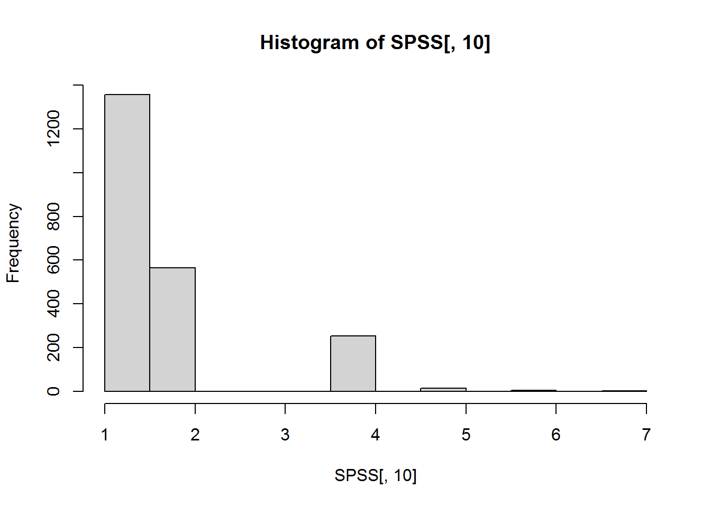
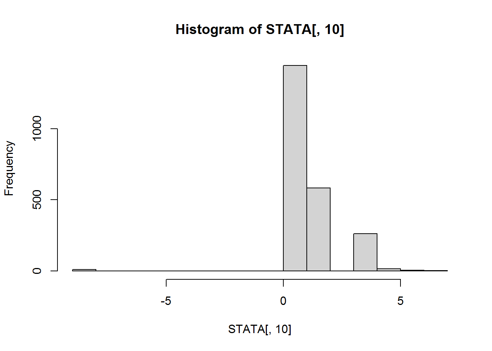
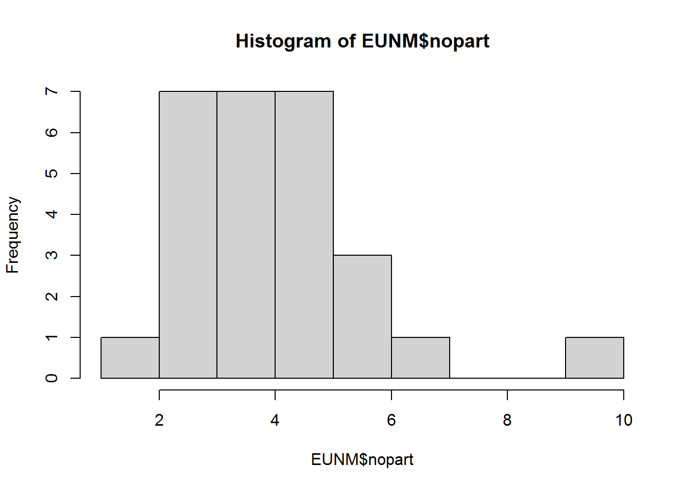

2 Základy R - 2
2.1 Načítanie dát
Dáta môžete mať z rôznych zdrojov a s rôznymi príponami. V tejto časti Vám ukážeme, ako načítať dáta vo formátoch, s ktorými sa pravdepodobne najčastejšie stretávate.
2.1.1 CSV súbor
Ako pri väčšine vecí v R, CSV sa dá načítať prostredníctvom base R, ale aj iných knižníc ako napríklad tidyverse (konkrétne readr).
base R
CSVDATA <- read.csv("./data/example.csv", sep = ";") #očividne je niečo zle, lebo sa nám načíta len jedna premenná
head(CSVDATA)## country.polar.vol.nopart.disp.GDP.demo.nogov
## 1 AT,1.4,12.39,3.41,2.47,28900,56,8
## 2 BE,2.97,13.93,9.05,4.46,27200,80,9
## 3 BG,6.43,42.09,2.52,7.37,2600,20,9
## 4 BLR,NA,NA,NA,NA,NA,NA,NA
## 5 CYP,33.47,6.89,3.52,2.82,16500,50,4
## 6 CZ,9.97,29.29,3.71,5.21,8100,20,12CSVDATA <- read.csv("./data/example.csv", sep = ",") #tu už to vyzerá lepšie
head(CSVDATA)## country polar vol nopart disp GDP demo nogov
## 1 AT 1.40 12.39 3.41 2.47 28900 56 8
## 2 BE 2.97 13.93 9.05 4.46 27200 80 9
## 3 BG 6.43 42.09 2.52 7.37 2600 20 9
## 4 BLR NA NA NA NA NA NA NA
## 5 CYP 33.47 6.89 3.52 2.82 16500 50 4
## 6 CZ 9.97 29.29 3.71 5.21 8100 20 12CSVDATA <- read.csv("./data/example.csv") # R pri read.csv defaultne používa ako oddelovač čiarku
head(CSVDATA)## country polar vol nopart disp GDP demo nogov
## 1 AT 1.40 12.39 3.41 2.47 28900 56 8
## 2 BE 2.97 13.93 9.05 4.46 27200 80 9
## 3 BG 6.43 42.09 2.52 7.37 2600 20 9
## 4 BLR NA NA NA NA NA NA NA
## 5 CYP 33.47 6.89 3.52 2.82 16500 50 4
## 6 CZ 9.97 29.29 3.71 5.21 8100 20 12Čo všetko sa dá definovať pri načítaní dát?
args(read.csv)## function (file, header = TRUE, sep = ",", quote = "\"", dec = ".",
## fill = TRUE, comment.char = "", ...)
## NULLreadr
#install.packages("readr") ## ak nemáte readr nainštalovanú, tak pred načítaním spustite tento príkaz bez začiatočného #
library(readr)
CSVDATA_alt <- read_csv("./data/example.csv")## Rows: 28 Columns: 8
## -- Column specification --------------------------------------------------------
## Delimiter: ","
## chr (1): country
## dbl (7): polar, vol, nopart, disp, GDP, demo, nogov
##
## i Use `spec()` to retrieve the full column specification for this data.
## i Specify the column types or set `show_col_types = FALSE` to quiet this message.head(CSVDATA_alt)## # A tibble: 6 x 8
## country polar vol nopart disp GDP demo nogov
## <chr> <dbl> <dbl> <dbl> <dbl> <dbl> <dbl> <dbl>
## 1 AT 1.4 12.4 3.41 2.47 28900 56 8
## 2 BE 2.97 13.9 9.05 4.46 27200 80 9
## 3 BG 6.43 42.1 2.52 7.37 2600 20 9
## 4 BLR NA NA NA NA NA NA NA
## 5 CYP 33.5 6.89 3.52 2.82 16500 50 4
## 6 CZ 9.97 29.3 3.71 5.21 8100 20 12- readr Vám ponúkne aj stručné info o špecifikácii načítaných dát
- na typy jednotlivých premenných sa dá pozrieť prostredníctvom
spec()funkcie
spec(CSVDATA_alt)## cols(
## country = col_character(),
## polar = col_double(),
## vol = col_double(),
## nopart = col_double(),
## disp = col_double(),
## GDP = col_double(),
## demo = col_double(),
## nogov = col_double()
## )Opäť sa pozrime na argumenty tejto funkcie.
args(read_csv)## function (file, col_names = TRUE, col_types = NULL, col_select = NULL,
## id = NULL, locale = default_locale(), na = c("", "NA"), quoted_na = TRUE,
## quote = "\"", comment = "", trim_ws = TRUE, skip = 0, n_max = Inf,
## guess_max = min(1000, n_max), name_repair = "unique", num_threads = readr_threads(),
## progress = show_progress(), show_col_types = should_show_types(),
## skip_empty_rows = TRUE, lazy = should_read_lazy())
## NULLNerozumieme argumentom?
?read_csv2.1.2 Dáta oddelené tabulátorom
Znova si môžeme ukázať dva spôsoby, prostredníctvom ktorých načítame dáta takéhoto formátu.
base R
TABDATA <- read.table("./data/example.txt")
head(TABDATA)## V1 V2 V3 V4 V5 V6 V7 V8
## 1 country polar vol nopart disp GDP demo nogov
## 2 AT 1.4 12.39 3.41 2.47 28900 56 8
## 3 BE 2.97 13.93 9.05 4.46 27200 80 9
## 4 BG 6.43 42.09 2.52 7.37 2600 20 9
## 5 CYP 33.47 6.89 3.52 2.82 16500 50 4
## 6 CZ 9.97 29.29 3.71 5.21 8100 20 12Vyzerá to tak, že názvy premenných nie sú načítané správne.
TABDATA <- read.table("./data/example.txt", header = T)
head(TABDATA)## country polar vol nopart disp GDP demo nogov
## 1 AT 1.40 12.39 3.41 2.47 28900 56 8
## 2 BE 2.97 13.93 9.05 4.46 27200 80 9
## 3 BG 6.43 42.09 2.52 7.37 2600 20 9
## 4 CYP 33.47 6.89 3.52 2.82 16500 50 4
## 5 CZ 9.97 29.29 3.71 5.21 8100 20 12
## 6 DK 3.74 10.95 4.71 1.50 35600 80 9Už by malo byť všetko OK.
summary(TABDATA)## country polar vol nopart
## Length:27 Min. : 0.700 Min. : 2.80 Min. :1.990
## Class :character 1st Qu.: 3.330 1st Qu.: 9.29 1st Qu.:2.970
## Mode :character Median : 5.910 Median :15.06 Median :3.540
## Mean : 7.096 Mean :21.85 Mean :3.971
## 3rd Qu.: 7.695 3rd Qu.:33.50 3rd Qu.:4.735
## Max. :33.470 Max. :53.16 Max. :9.050
## disp GDP demo nogov
## Min. : 0.660 Min. : 2600 Min. :17.00 Min. : 4.00
## 1st Qu.: 3.295 1st Qu.: 7350 1st Qu.:20.00 1st Qu.: 6.00
## Median : 5.210 Median :16500 Median :36.00 Median : 8.00
## Mean : 5.700 Mean :19733 Mean :47.44 Mean : 9.37
## 3rd Qu.: 7.040 3rd Qu.:29050 3rd Qu.:80.00 3rd Qu.:12.00
## Max. :18.370 Max. :61500 Max. :80.00 Max. :21.00A je to tak.
is.numeric(TABDATA[ , 2])## [1] TRUEreadr
TABDATA_alt <- read_table("./data/example.txt")##
## -- Column specification --------------------------------------------------------
## cols(
## country = col_character(),
## polar = col_double(),
## vol = col_double(),
## nopart = col_double(),
## disp = col_double(),
## GDP = col_double(),
## demo = col_double(),
## nogov = col_double()
## )tail(TABDATA_alt)## # A tibble: 6 x 8
## country polar vol nopart disp GDP demo nogov
## <chr> <dbl> <dbl> <dbl> <dbl> <dbl> <dbl> <dbl>
## 1 RO 4.59 36.1 3.53 7.01 2900 20 16
## 2 SVK 6.03 40.6 4.76 5.64 6200 20 13
## 3 SLO 3.66 30.9 4.55 3.8 14400 19 12
## 4 SPA 6.03 8 2.48 6.33 17800 33 6
## 5 SWE 3 15.1 4.29 1.78 35300 80 6
## 6 UK 1.4 7.7 2.12 16.2 31400 80 5Readr sám vie, čo sú názvy premenných.
2.1.3 Univerzálna funkcia s definovaním oddelovača
Oddelovač sa samozrejme dá definovať aj používateľom. Veľmi handy funkcia, keď máte netradičné oddelovače ako “|”.
base R
DELIMDATA <- read.delim("./data/example_alt.txt", sep = "|")
head(DELIMDATA)## country polar vol nopart disp GDP demo nogov
## 1 AT 1.40 12.39 3.41 2.47 28900 56 8
## 2 BE 2.97 13.93 9.05 4.46 27200 80 9
## 3 BG 6.43 42.09 2.52 7.37 2600 20 9
## 4 BLR NA NA NA NA NA NA NA
## 5 CYP 33.47 6.89 3.52 2.82 16500 50 4
## 6 CZ 9.97 29.29 3.71 5.21 8100 20 12readr
DELIMDATA_alt <- read_delim("./data/example_alt.txt", delim = "|") #všimnite si zmenu názvu argumentu## Rows: 28 Columns: 8
## -- Column specification --------------------------------------------------------
## Delimiter: "|"
## chr (1): country
## dbl (7): polar, vol, nopart, disp, GDP, demo, nogov
##
## i Use `spec()` to retrieve the full column specification for this data.
## i Specify the column types or set `show_col_types = FALSE` to quiet this message.head(DELIMDATA_alt)## # A tibble: 6 x 8
## country polar vol nopart disp GDP demo nogov
## <chr> <dbl> <dbl> <dbl> <dbl> <dbl> <dbl> <dbl>
## 1 AT 1.4 12.4 3.41 2.47 28900 56 8
## 2 BE 2.97 13.9 9.05 4.46 27200 80 9
## 3 BG 6.43 42.1 2.52 7.37 2600 20 9
## 4 BLR NA NA NA NA NA NA NA
## 5 CYP 33.5 6.89 3.52 2.82 16500 50 4
## 6 CZ 9.97 29.3 3.71 5.21 8100 20 122.1.4 Excel
Na Excel budeme potrebovať špeciálnu knižnicu, keďže base R excel nevie načítať.
- knižníc pre tento účel je viac a jedna z nich je openxlsx, prostredníctvom ktorej viete okrem načítania dát vytvoriť aj excel súbor, pridať do neho hárky a dáta.
#install.packages("openxlsx") ## ak nemáte openxlsx nainštalovanú, tak pred načítaním spustite tento príkaz bez začiatočného #
library(openxlsx)RSVS2021 <- read.xlsx("./data/2021.xlsx", 1)
RSVS2021[sample(nrow(RSVS2021), 6), c(2:4, 20:26)] #komplikovanejší zápis, ale skúste interpretovať## Meno.sudcu Priezvisko.sudcu Rok Agenda
## 8866 Branislav Breza 2021 CoD
## 1746 Peter Kvietok 2021 Ntc
## 34981 Kristína Güner 2021 C
## 34351 Lívia Gombárová 2021 Td
## 25035 Marianna Hosťovecká 2021 Er
## 13853 Miroslav Šepták 2021 CoPom
## Počet1 Počet2 Počet3 Počet4 Počet5 Typ
## 8866 3 2 1 0 NA R
## 1746 1 NA NA NA 1 N
## 34981 4 1 1 1 NA O
## 34351 1 0 1 0 1 R
## 25035 160 NA NA NA NA V
## 13853 0 0 0 0 NA N- pozrime sa, čo sa dá v rámci tejto funkcie definovať
args(read.xlsx)## function (xlsxFile, sheet, startRow = 1, colNames = TRUE, rowNames = FALSE,
## detectDates = FALSE, skipEmptyRows = TRUE, skipEmptyCols = TRUE,
## rows = NULL, cols = NULL, check.names = FALSE, sep.names = ".",
## namedRegion = NULL, na.strings = "NA", fillMergedCells = FALSE)
## NULLOkrem openxlsx v tidyverse knižnica readxl:
- rýchlejšie načítanie dát
- ak už viete pracovať s tidyverse, tak výhodnejšie kvôli zápisom
- keď nie je aktualizovaná, tak môže vyhodiť error
#install.packages("readxl") ## ak nemáte readxl nainštalovanú, tak pred načítaním spustite tento príkaz bez začiatočného #
library(readxl)
RSVS2021_alt <- read_xlsx("./data/2021.xlsx", 1)
RSVS2021_alt[sample(nrow(RSVS2021_alt), 6), c(2:4, 20:26)]## # A tibble: 6 x 10
## `Meno sudcu` Priezvisk~1 Rok Agenda Počet1 Počet2 Počet3 Počet4 Počet5 Typ
## <chr> <chr> <dbl> <chr> <dbl> <dbl> <dbl> <dbl> <dbl> <chr>
## 1 Martin Piovartsy 2021 Tost 22 0 22 1 27 R
## 2 Renáta Sýkorová 2021 Ps 26 0 NA NA NA P
## 3 Martina Holecová 2021 OdK 85 NA NA NA NA V
## 4 Marian Tengely 2021 Pc 24 0 0 0 NA N
## 5 Emil Dubňanský 2021 To 2 0 1 0 NA O
## 6 Viktor Marko, PhD. 2021 Ntok NA NA NA NA NA P
## # ... with abbreviated variable name 1: `Priezvisko sudcu`Aké sú argumenty pri tejto funkcii?
args(read_xlsx)## function (path, sheet = NULL, range = NULL, col_names = TRUE,
## col_types = NULL, na = "", trim_ws = TRUE, skip = 0, n_max = Inf,
## guess_max = min(1000, n_max), progress = readxl_progress(),
## .name_repair = "unique")
## NULL2.1.5 foreign knižnica (nepovinné)
R vie načítať dáta aj zo súborov, ktoré boli uložené v iných štatistických softwareoch. Pre predstavu sú nižšie ukázané niektoré z nich.
SPSS
library(foreign)
SPSS <- read.spss("./data/example.por") ## veľmi jednoduchý príkaz a ako vidíte nefunguje
str(SPSS) ## asi sme pri načítaní dát neočakávali list## List of 10
## $ VERSION : chr [1:2208] "ANES2008TS_VERSION:20120217" "ANES2008TS_VERSION:20120217" "ANES2008TS_VERSION:20120217" "ANES2008TS_VERSION:20120217" ...
## $ V080001 : num [1:2208] 1 2 3 4 5 6 7 8 9 10 ...
## $ V080101 : num [1:2208] 2 2.16 2.46 2.16 2.93 ...
## $ V080101A: num [1:2208] 175097 189642 215132 189642 256749 ...
## $ V080102 : Factor w/ 807 levels "0. No Post-election interview",..: 725 1 777 755 803 1 770 743 771 295 ...
## $ V080102A: Factor w/ 856 levels "0. No Post-election interview",..: 774 1 826 804 852 1 819 792 820 333 ...
## $ V080103 : num [1:2208] 67986 67986 67986 67986 67986 ...
## $ V081001 : Factor w/ 2 levels "0. Pre-election only",..: 2 1 2 2 2 1 2 2 2 2 ...
## $ V081101 : Factor w/ 2 levels "1. Male respondent selected",..: 1 2 2 1 1 2 2 1 2 1 ...
## $ V081102 : Factor w/ 9 levels "-9. Refused in household listing",..: 6 3 3 3 3 3 3 3 3 4 ...
## - attr(*, "label.table")=List of 10
## ..$ VERSION : NULL
## ..$ V080001 : NULL
## ..$ V080101 : NULL
## ..$ V080101A: NULL
## ..$ V080102 : Named num 0
## .. ..- attr(*, "names")= chr "0. No Post-election interview"
## ..$ V080102A: Named num 0
## .. ..- attr(*, "names")= chr "0. No Post-election interview"
## ..$ V080103 : NULL
## ..$ V081001 : Named num [1:2] 1 0
## .. ..- attr(*, "names")= chr [1:2] "1. Pre-election and Post-election" "0. Pre-election only"
## ..$ V081101 : Named num [1:2] 2 1
## .. ..- attr(*, "names")= chr [1:2] "2. Female respondent selected" "1. Male respondent selected"
## ..$ V081102 : Named num [1:9] 7 6 5 4 3 2 1 -4 -9
## .. ..- attr(*, "names")= chr [1:9] "7. White, black and another race" "6. Black and another race" "5. White and another race" "4. Other race" ...
## - attr(*, "variable.labels")= Named chr [1:10] " " "ID.1. CASE ID" "WT.1. PRE CROSS-SECTION SAMPLE WEIGHT - POST-STRAT, centered" "WT.1. PRE CROSS-SECTION SAMPLE WEIGHT - POST-STRATIFIED" ...
## ..- attr(*, "names")= chr [1:10] "VERSION" "V080001" "V080101" "V080101A" ...
## - attr(*, "missings")=List of 10
## ..$ VERSION :List of 1
## .. ..$ type: chr "none"
## ..$ V080001 :List of 2
## .. ..$ type : chr "low"
## .. ..$ value: num -1
## ..$ V080101 :List of 2
## .. ..$ type : chr "low"
## .. ..$ value: num -1
## ..$ V080101A:List of 2
## .. ..$ type : chr "low"
## .. ..$ value: num -1
## ..$ V080102 :List of 2
## .. ..$ type : chr "low"
## .. ..$ value: num -1
## ..$ V080102A:List of 2
## .. ..$ type : chr "low"
## .. ..$ value: num -1
## ..$ V080103 :List of 2
## .. ..$ type : chr "low"
## .. ..$ value: num -1
## ..$ V081001 :List of 2
## .. ..$ type : chr "low"
## .. ..$ value: num -1
## ..$ V081101 :List of 2
## .. ..$ type : chr "low"
## .. ..$ value: num -1
## ..$ V081102 :List of 2
## .. ..$ type : chr "low"
## .. ..$ value: num -1is.data.frame(SPSS) ## na prácu s dátami potrebujeme data frame## [1] FALSESPSS <- read.spss("./data/example.por", to.data.frame = T) ## toto je bližšie k tomu, čo potrebujeme
summary(SPSS[8:10]) ## ale tie popisy hodnôt?!## V081001 V081101
## 0. Pre-election only : 212 1. Male respondent selected : 941
## 1. Pre-election and Post-election:1995 2. Female respondent selected:1266
## NA's : 1 NA's : 1
##
##
##
##
## V081102
## 1. White :1355
## 2. Black/African-American: 565
## 4. Other race : 253
## 5. White and another race: 16
## 6. Black and another race: 6
## (Other) : 2
## NA's : 11SPSS <- read.spss("./data/example.por", to.data.frame = T, use.value.labels = F)
summary(SPSS[8:10]) ## práca s niečím takýmto a codebookom bude určite jednoduchšia## V081001 V081101 V081102
## Min. :0.0000 Min. :1.000 Min. :1.000
## 1st Qu.:1.0000 1st Qu.:1.000 1st Qu.:1.000
## Median :1.0000 Median :2.000 Median :1.000
## Mean :0.9039 Mean :1.574 Mean :1.651
## 3rd Qu.:1.0000 3rd Qu.:2.000 3rd Qu.:2.000
## Max. :1.0000 Max. :2.000 Max. :7.000
## NA's :1 NA's :1 NA's :11hist(SPSS[, 10])
STATA
Vyskúšajme STATA súbor
STATA <- read.dta("./data/example.dta") str(STATA) ## tu sa nám ho podarilo načítať lepšie, keďže je to data frame, ale stále to nie je dokonalé## 'data.frame': 2322 obs. of 10 variables:
## $ Version : chr "ANES2008TS_VERSION:20120217" "ANES2008TS_VERSION:20120217" "ANES2008TS_VERSION:20120217" "ANES2008TS_VERSION:20120217" ...
## $ V080001 : num 1 2 3 4 5 6 7 8 9 10 ...
## $ V080101 : num 2 2.16 2.46 2.16 2.93 ...
## $ V080101a: num 175097 189642 215132 189642 256749 ...
## $ V080102 : num 1.92 0 2.41 2.13 3 ...
## $ V080102a: num 186174 0 232918 206027 290691 ...
## $ V080103 : num 67986 67986 67986 67986 67986 ...
## $ V081001 : Factor w/ 2 levels "0. Pre-election only",..: 2 1 2 2 2 1 2 2 2 2 ...
## $ V081101 : Factor w/ 2 levels "1. Male respondent selected",..: 1 2 2 1 1 2 2 1 2 1 ...
## $ V081102 : Factor w/ 9 levels "-9. Refused in household listing",..: 6 3 3 3 3 3 3 3 3 4 ...
## - attr(*, "datalabel")= chr ""
## - attr(*, "time.stamp")= chr "12 Feb 2013 14:56"
## - attr(*, "formats")= chr [1:10] "%27s" "%9.0g" "%10.0g" "%10.0g" ...
## - attr(*, "types")= int [1:10] 27 254 255 255 255 255 255 251 251 254
## - attr(*, "val.labels")= chr [1:10] "" "V080001_" "" "" ...
## - attr(*, "var.labels")= chr [1:10] "" "ID.1. CASE ID" "WT.1. PRE CROSS-SECTION SAMPLE WEIGHT - POST-STRAT, centered" "WT.1. PRE CROSS-SECTION SAMPLE WEIGHT - POST-STRATIFIED" ...
## - attr(*, "version")= int 12
## - attr(*, "label.table")=List of 5
## ..$ V080102_: Named int 0
## .. ..- attr(*, "names")= chr "0. No Post-election interview"
## ..$ V080102a: Named int 0
## .. ..- attr(*, "names")= chr "0. No Post-election interview"
## ..$ V081001_: Named int [1:2] 0 1
## .. ..- attr(*, "names")= chr [1:2] "0. Pre-election only" "1. Pre-election and Post-election"
## ..$ V081101_: Named int [1:2] 1 2
## .. ..- attr(*, "names")= chr [1:2] "1. Male respondent selected" "2. Female respondent selected"
## ..$ V081102_: Named int [1:9] -9 -4 1 2 3 4 5 6 7
## .. ..- attr(*, "names")= chr [1:9] "-9. Refused in household listing" "-4. NA (blank recorded)" "1. White" "2. Black/African-American" ...hist(STATA[, 10]) ## stále sa nám ale načítali popisy hodnôt, preto nám hist() nejdeSTATA <- read.dta("./data/example.dta", convert.factors = F) ## iným argumentom, ale stále vieme túto chybu napraviť
hist(STATA[, 10]) ## -9 malo byť nakódované ako chýbajúca hodnota, ale nebolo to v STATE takto definovaené (v originálnom datasete SPSS to tak bolo)
2.2 Práca s dátami
2.2.1 Chýbajúce dáta
Ak máte vytvorených veľa objektov, môže to mať dopad na rýchlosť R (zaplnená RAM). Nepotrebné objekty je ale možné vymazať.
ls() ## ukáže všetky vytvorené objekty## [1] "a" "b" "compList" "CSVDATA"
## [5] "CSVDATA_alt" "d" "DELIMDATA" "DELIMDATA_alt"
## [9] "exData" "htmlhead" "charvector" "img"
## [13] "logicalvector" "newData" "newList" "numericVector"
## [17] "propMat" "rNames" "RSVS2021" "RSVS2021_alt"
## [21] "simpleList" "SPSS" "STATA" "TABDATA"
## [25] "TABDATA_alt" "tranMat" "trialMat" "x"
## [29] "x1" "x2" "y" "z"rm(list = c("TABDATA", "STATA"))
ls()## [1] "a" "b" "compList" "CSVDATA"
## [5] "CSVDATA_alt" "d" "DELIMDATA" "DELIMDATA_alt"
## [9] "exData" "htmlhead" "charvector" "img"
## [13] "logicalvector" "newData" "newList" "numericVector"
## [17] "propMat" "rNames" "RSVS2021" "RSVS2021_alt"
## [21] "simpleList" "SPSS" "TABDATA_alt" "tranMat"
## [25] "trialMat" "x" "x1" "x2"
## [29] "y" "z"Vytvorme si z CSVDATA nový objekt, s ktorým budeme pracovať.
EU <- CSVDATA
EU## country polar vol nopart disp GDP demo nogov
## 1 AT 1.40 12.39 3.41 2.47 28900 56 8
## 2 BE 2.97 13.93 9.05 4.46 27200 80 9
## 3 BG 6.43 42.09 2.52 7.37 2600 20 9
## 4 BLR NA NA NA NA NA NA NA
## 5 CYP 33.47 6.89 3.52 2.82 16500 50 4
## 6 CZ 9.97 29.29 3.71 5.21 8100 20 12
## 7 DK 3.74 10.95 4.71 1.50 35600 80 9
## 8 EE 8.10 36.37 5.50 4.62 7900 18 12
## 9 FIN 7.28 9.22 5.15 3.31 30900 80 6
## 10 FR 7.29 18.96 3.54 18.37 25700 80 8
## 11 GER 4.07 8.10 3.31 3.28 27300 62 5
## 12 GRE 11.66 9.36 2.21 7.07 16400 36 7
## 13 HUN 5.75 23.61 4.08 9.34 6600 20 9
## 14 IRE 5.91 10.28 2.99 6.03 35100 80 8
## 15 ITA 6.59 30.92 6.07 5.62 21700 63 12
## 16 LAT 8.57 53.16 5.49 3.93 6800 17 16
## 17 LIT 2.50 48.72 3.52 8.34 6300 18 16
## 18 LUX 3.87 8.43 4.34 4.15 61500 80 5
## 19 MT 23.00 2.80 1.99 0.66 11700 35 6
## 20 NL 1.85 21.31 4.81 0.95 29200 80 7
## 21 PL 0.70 43.15 2.95 8.38 6400 20 21
## 22 PT 11.75 11.69 2.62 5.29 12400 34 6
## 23 RO 4.59 36.08 3.53 7.01 2900 20 16
## 24 SVK 6.03 40.62 4.76 5.64 6200 20 13
## 25 SLO 3.66 30.89 4.55 3.80 14400 19 12
## 26 SPA 6.03 8.00 2.48 6.33 17800 33 6
## 27 SWE 3.00 15.06 4.29 1.78 35300 80 6
## 28 UK 1.40 7.70 2.12 16.16 31400 80 5Pozrime sa na chýbajúce dáta.
is.na(EU) ## toto asi nebude najpraktickejšie pri veľkých datasetoch## country polar vol nopart disp GDP demo nogov
## [1,] FALSE FALSE FALSE FALSE FALSE FALSE FALSE FALSE
## [2,] FALSE FALSE FALSE FALSE FALSE FALSE FALSE FALSE
## [3,] FALSE FALSE FALSE FALSE FALSE FALSE FALSE FALSE
## [4,] FALSE TRUE TRUE TRUE TRUE TRUE TRUE TRUE
## [5,] FALSE FALSE FALSE FALSE FALSE FALSE FALSE FALSE
## [6,] FALSE FALSE FALSE FALSE FALSE FALSE FALSE FALSE
## [7,] FALSE FALSE FALSE FALSE FALSE FALSE FALSE FALSE
## [8,] FALSE FALSE FALSE FALSE FALSE FALSE FALSE FALSE
## [9,] FALSE FALSE FALSE FALSE FALSE FALSE FALSE FALSE
## [10,] FALSE FALSE FALSE FALSE FALSE FALSE FALSE FALSE
## [11,] FALSE FALSE FALSE FALSE FALSE FALSE FALSE FALSE
## [12,] FALSE FALSE FALSE FALSE FALSE FALSE FALSE FALSE
## [13,] FALSE FALSE FALSE FALSE FALSE FALSE FALSE FALSE
## [14,] FALSE FALSE FALSE FALSE FALSE FALSE FALSE FALSE
## [15,] FALSE FALSE FALSE FALSE FALSE FALSE FALSE FALSE
## [16,] FALSE FALSE FALSE FALSE FALSE FALSE FALSE FALSE
## [17,] FALSE FALSE FALSE FALSE FALSE FALSE FALSE FALSE
## [18,] FALSE FALSE FALSE FALSE FALSE FALSE FALSE FALSE
## [19,] FALSE FALSE FALSE FALSE FALSE FALSE FALSE FALSE
## [20,] FALSE FALSE FALSE FALSE FALSE FALSE FALSE FALSE
## [21,] FALSE FALSE FALSE FALSE FALSE FALSE FALSE FALSE
## [22,] FALSE FALSE FALSE FALSE FALSE FALSE FALSE FALSE
## [23,] FALSE FALSE FALSE FALSE FALSE FALSE FALSE FALSE
## [24,] FALSE FALSE FALSE FALSE FALSE FALSE FALSE FALSE
## [25,] FALSE FALSE FALSE FALSE FALSE FALSE FALSE FALSE
## [26,] FALSE FALSE FALSE FALSE FALSE FALSE FALSE FALSE
## [27,] FALSE FALSE FALSE FALSE FALSE FALSE FALSE FALSE
## [28,] FALSE FALSE FALSE FALSE FALSE FALSE FALSE FALSEKoľko hodnôt nám celkovo chýba v datasete? Koľko v jednotlivých premenných?
sum(is.na(EU))## [1] 7sum(is.na(EU$nopart))## [1] 1Dá sa to aj takto.
summary(EU)## country polar vol nopart
## Length:28 Min. : 0.700 Min. : 2.80 Min. :1.990
## Class :character 1st Qu.: 3.330 1st Qu.: 9.29 1st Qu.:2.970
## Mode :character Median : 5.910 Median :15.06 Median :3.540
## Mean : 7.096 Mean :21.85 Mean :3.971
## 3rd Qu.: 7.695 3rd Qu.:33.50 3rd Qu.:4.735
## Max. :33.470 Max. :53.16 Max. :9.050
## NA's :1 NA's :1 NA's :1
## disp GDP demo nogov
## Min. : 0.660 Min. : 2600 Min. :17.00 Min. : 4.00
## 1st Qu.: 3.295 1st Qu.: 7350 1st Qu.:20.00 1st Qu.: 6.00
## Median : 5.210 Median :16500 Median :36.00 Median : 8.00
## Mean : 5.700 Mean :19733 Mean :47.44 Mean : 9.37
## 3rd Qu.: 7.040 3rd Qu.:29050 3rd Qu.:80.00 3rd Qu.:12.00
## Max. :18.370 Max. :61500 Max. :80.00 Max. :21.00
## NA's :1 NA's :1 NA's :1 NA's :1Kde sa nachádzajú NAs?
which(is.na(EU), arr.ind=TRUE) ## čo sa stane, keď zmeníme arr.ind na FALSE?## row col
## [1,] 4 2
## [2,] 4 3
## [3,] 4 4
## [4,] 4 5
## [5,] 4 6
## [6,] 4 7
## [7,] 4 8Alebo
EU[is.na(EU$polar), ] ## ukáže nám všetky informácie o riadkoch, v ktorých je chýbajúca hodnota pre polarizáciu. ## country polar vol nopart disp GDP demo nogov
## 4 BLR NA NA NA NA NA NA NAPoznámka: premenná/pozorovanie == NA v R nefunguje, vždy musíte na chýbajúce hodnoty referovať prostredníctvom is.na() funkcie.
Ako vymazať pozorovania s chýbajúcimi údajmi?
EUNM <- EU[is.na(EU$polar) == F, ] ## týmto spôsobom odstránime tie riadky, v ktorých chýba údaj o polarizácii
EUNM <- subset(EU, is.na(polar) == F) ## rovnako sa to dá spraviť aj takto za použitia subset funkcie (všimnite si, že pri tejto fukncii stačí špecifikovať len meno premennej)
EUNM <- na.omit(EU) ## toto je asi najjednoduchší spôsob odstránenia chýbajúcich hodnôt. na.omit odstráni všetky chýbajúce hodnoty, čo znamená, že pozorovanie/riadok s hoci len jednou chýbajucou hodnotou bude odstránené/ý
mean(EU$polar)## [1] NAmean(EU$polar, na.rm = T) == mean(EUNM$polar)## [1] TRUE2.2.2 Kódovanie premenných
Pri práci si často musíte vytvárať nové premenné na základe charakteristík tých pôvodných. V tejto časti Vám ukážeme, ako sa to dá urobiť za využitia base R.
EUNM$govDummy <- NA ## v našom datasete vytvoríme novú premennú, ktorá bude obsahovať len chýbajúce hodnoty
EUNM$govDummy[EUNM$nogov <= 8] <- 0 ## priradíme tejto novej premennej hodnotu 0, ak je splnená definovaná podmienka: nogov je menší alebo rovný 8; definovanie NA na začiatku predchádza možným problémom s equal length v budúcnosti
EUNM ## prvý krok je spravený## country polar vol nopart disp GDP demo nogov govDummy
## 1 AT 1.40 12.39 3.41 2.47 28900 56 8 0
## 2 BE 2.97 13.93 9.05 4.46 27200 80 9 NA
## 3 BG 6.43 42.09 2.52 7.37 2600 20 9 NA
## 5 CYP 33.47 6.89 3.52 2.82 16500 50 4 0
## 6 CZ 9.97 29.29 3.71 5.21 8100 20 12 NA
## 7 DK 3.74 10.95 4.71 1.50 35600 80 9 NA
## 8 EE 8.10 36.37 5.50 4.62 7900 18 12 NA
## 9 FIN 7.28 9.22 5.15 3.31 30900 80 6 0
## 10 FR 7.29 18.96 3.54 18.37 25700 80 8 0
## 11 GER 4.07 8.10 3.31 3.28 27300 62 5 0
## 12 GRE 11.66 9.36 2.21 7.07 16400 36 7 0
## 13 HUN 5.75 23.61 4.08 9.34 6600 20 9 NA
## 14 IRE 5.91 10.28 2.99 6.03 35100 80 8 0
## 15 ITA 6.59 30.92 6.07 5.62 21700 63 12 NA
## 16 LAT 8.57 53.16 5.49 3.93 6800 17 16 NA
## 17 LIT 2.50 48.72 3.52 8.34 6300 18 16 NA
## 18 LUX 3.87 8.43 4.34 4.15 61500 80 5 0
## 19 MT 23.00 2.80 1.99 0.66 11700 35 6 0
## 20 NL 1.85 21.31 4.81 0.95 29200 80 7 0
## 21 PL 0.70 43.15 2.95 8.38 6400 20 21 NA
## 22 PT 11.75 11.69 2.62 5.29 12400 34 6 0
## 23 RO 4.59 36.08 3.53 7.01 2900 20 16 NA
## 24 SVK 6.03 40.62 4.76 5.64 6200 20 13 NA
## 25 SLO 3.66 30.89 4.55 3.80 14400 19 12 NA
## 26 SPA 6.03 8.00 2.48 6.33 17800 33 6 0
## 27 SWE 3.00 15.06 4.29 1.78 35300 80 6 0
## 28 UK 1.40 7.70 2.12 16.16 31400 80 5 0EUNM$govDummy[EUNM$nogov > 8] <- 1 ## priradíme číslo 1, ak je nogov vyšší ako 8; ak ste si istí, že v premennej, ktorá je súčasťou podmienky nemáte ani jednu chýbajúcu hodnotu, tak sa dá postupovať tak, že priradíte všetkým pozorovaniam prvú hodnotu a definovať podmienku budete len pri druhej
EUNM$govDummyIF <- ifelse(EUNM$nogov <= 8, 0, 1) ## ak má nová premenná len dve kategórie, tak je možné použiť ifelse funkciu. Prvým argumentom je podmienka, druhým hodnota, ak je splnená a tretím hodnota, ak nie je splnená.
## príkladom matematického kódovania môžu byť riadky nižšie. Nová premenná je vytvorená ako priemer dvoch existujúcich premenných.
EUNM$newVar <- (EUNM$polar + EUNM$vol) / 2
head(EUNM)## country polar vol nopart disp GDP demo nogov govDummy govDummyIF newVar
## 1 AT 1.40 12.39 3.41 2.47 28900 56 8 0 0 6.895
## 2 BE 2.97 13.93 9.05 4.46 27200 80 9 1 1 8.450
## 3 BG 6.43 42.09 2.52 7.37 2600 20 9 1 1 24.260
## 5 CYP 33.47 6.89 3.52 2.82 16500 50 4 0 0 20.180
## 6 CZ 9.97 29.29 3.71 5.21 8100 20 12 1 1 19.630
## 7 DK 3.74 10.95 4.71 1.50 35600 80 9 1 1 7.345S viacerými kategóriami premennej a s viacerými podmienkami je logika kódovania taká istá. Chceme novú premennú, ktorá bude nadobúdať hodnoty:
- “Low”, keď je polarizácia nad 8 a nogov nad 11;
- “Medium”, keď je polarizácia medzi 5 a 8, pričom nogov je medzi 8 a 11;
- “High”, keď je polarizácia menšia ako 5 a počet vlád menší ako 8.
EUNM$stability <- "Low"
EUNM$stability[(EUNM$polar >= 5 & EUNM$polar <= 8) & (EUNM$nogov >= 8 & EUNM$nogov <=11)] <- "Medium"
EUNM$stability[(EUNM$polar < 5) & (EUNM$nogov < 8)] <- "High" ## Prejdime si spolu jednotlivé riadky
table(EUNM$stability, EUNM$polar) ## jednoduchá cross-table##
## 0.7 1.4 1.85 2.5 2.97 3 3.66 3.74 3.87 4.07 4.59 5.75 5.91 6.03 6.43
## High 0 1 1 0 0 1 0 0 1 1 0 0 0 0 0
## Low 1 1 0 1 1 0 1 1 0 0 1 0 0 2 0
## Medium 0 0 0 0 0 0 0 0 0 0 0 1 1 0 1
##
## 6.59 7.28 7.29 8.1 8.57 9.97 11.66 11.75 23 33.47
## High 0 0 0 0 0 0 0 0 0 0
## Low 1 1 0 1 1 1 1 1 1 1
## Medium 0 0 1 0 0 0 0 0 0 0table(EUNM$stability, EUNM$nogov) ## ďalšia jednoduchá cross-table##
## 4 5 6 7 8 9 12 13 16 21
## High 0 3 1 1 0 0 0 0 0 0
## Low 1 0 4 1 1 2 4 1 3 1
## Medium 0 0 0 0 2 2 0 0 0 0Zmeňme počty na podiely v percentách
tTab <- table(EUNM$stability, EUNM$nogov)
prop.table(tTab, 1) ## tuto počítame podiely po riadkoch, podiely v rámci stĺpcov získate tak, že poviete R, aby počítalo druhú dimenziu matice (prop.table(tTab, 2))##
## 4 5 6 7 8 9
## High 0.00000000 0.60000000 0.20000000 0.20000000 0.00000000 0.00000000
## Low 0.05555556 0.00000000 0.22222222 0.05555556 0.05555556 0.11111111
## Medium 0.00000000 0.00000000 0.00000000 0.00000000 0.50000000 0.50000000
##
## 12 13 16 21
## High 0.00000000 0.00000000 0.00000000 0.00000000
## Low 0.22222222 0.05555556 0.16666667 0.05555556
## Medium 0.00000000 0.00000000 0.00000000 0.00000000Ako ste si mohli všimnúť, tak premennú sme nevytvorili správne. Dá sa to pri takto definovaných podmienkach napraviť?
Pokračujme ale s vytvorenou premennou. V R sa dajú vytvoriť aj crosstabuľky s troma premennými
## Najprv si vytvorme binárnu premennú
EUNM$volDummy <- 0
EUNM$volDummy[EUNM$vol > 25] <- 1 ## Rozumiete, čo sme tu spravili?
tTabThree <- table(EUNM$stability, EUNM$govDummy, EUNM$volDummy)
ftable(tTabThree) ## 0 1
##
## High 0 5 0
## 1 0 0
## Low 0 7 0
## 1 2 9
## Medium 0 2 0
## 1 1 1Ako vidíte, pri viacerých kategóriách môže byť takáto tabuľka veľmi messy. Taktiež ako ste mohli vidieť, výsledok table funkcie je možné uložiť, čo pomôže, keď potrebujete pracovať s vypočítaným frekvenciami, keďže ich viete meniť v rámci matice alebo data frame.
2.2.3 Faktory
class(EUNM$stability) ## túto premennú sme vytvorili a tým, aké hodnoty sme jej priradili ju R zadefinovalo ako textovú. Každopádne týmto strácame jednu ďalšiu charakteristiku tejto premennej a to je, že ide o usporiadanú (ordered) premennú.## [1] "character"table(EUNM$stability)##
## High Low Medium
## 5 18 4Na vytvorenie premennej, ktorá bude rešpektovať usporiadanie (úrovne/levels) kategórií ju musíme zmeniť na faktor.
EUNM$stabFactor <- factor(EUNM$stability)
levels(EUNM$stabFactor)## [1] "High" "Low" "Medium"Úrovne sme vytvorením faktor premennej kategóriám určili, ale stále nie sú v správnom poradí.
is.ordered(EUNM$stabFactor)## [1] FALSEEUNM$stabFactor <- factor(EUNM$stability, ordered = T) ## takto zadefinujeme, že kategórie majú poradie, ale je správne?
is.ordered(EUNM$stabFactor)## [1] TRUElevels(EUNM$stabFactor) ## ak ho chcete mať abecedné, tak určite, ale to asi nie je náš zámer## [1] "High" "Low" "Medium"Skúsme teraz zadefinovať kategórie tak, ako chceme.
EUNM$stabFactor <- factor(EUNM$stability, levels = c("Low", "Medium", "High"),
ordered = T)
levels(EUNM$stabFactor)## [1] "Low" "Medium" "High"Podarilo sa nám určiť správne poradie. Faktory a ich poradie sú dôležité pri štatistickom modelovaní a pri tvorbe grafov. Textové vektory môžu byť napríklad súčasťou regresie, keďže R ich v procese prevedie na faktory. Pri tejto zmene, ale neurčí poradie, čiže nemáte potom kontrolu nad tým, čo je referenčná kategória.
Na záver Vám môžeme ukázať ešte jednu užitočnú funkciu v tomto kontexte.
EUNM$stabFactor <- factor(EUNM$stability)
EUNM$stabFactor <- relevel(EUNM$stabFactor, ref = "Medium")
levels(EUNM$stabFactor)## [1] "Medium" "High" "Low"Ak nevyhnutne nepotrebujete faktor usporiadaný podľa poradia, ale zaujíma Vás referenčná kategória, tak ju viete takto určiť. Faktor nie je usporiadaný podľa poradia, ale prvou kategóriou je referenčná.
2.3 Ukladanie dát
Datasety, ktoré vytvoríte v R môžete exportovať do súborov. Ukážeme si ako exportovať dataset do troch rôznych typov súborov.
Tabulátor/definovaný separátor
write.table(EU, file = "eu-data.txt", sep = "|", row.names = F)Tento príkaz Vám uloží dáta do WD. Ak ho chcete uložiť inde, tak definujte cestu v rámci file argumentu (napr.: file = “./outputs/eu-data.txt”). Objekt a meno sú vždy povinné, ostatné argumenty a ich default nastavenia nájdete v dokumentácii. Týmto príkazom viete okrem tabulátorových oddelení definovať aj iné ako napríklad dáta oddelené |.
CSV
write.csv(EU, file = "eu-data.csv", row.names = F)CSV súbor vytvoríte takým istým spôsobom, pričom však neviete definovať oddelovač dát, keďže v tejto funkcii je daný (čiarka).
Excel
library(openxlsx)
write.xlsx(EU, file = "eu-data.xlsx", rowNames = F)Pri exceli nejde o nič zložitejšie, akurát je potrebné použiť openxlsx knižnicu, v ktorej sa môžu niektoré argumenty s rovnakou funkciou volať inak - napr. rowNames. Existuje však aj trochu zložitejší spôsob vytvorenia excelu prostredníctvom tejto knižnice, kde máte priamy dosah na štruktúru excelu.
OUT <- createWorkbook() ## vytvoríme si excel súbor a uložíme ho do objektu OUT
addWorksheet(OUT, "data") ## do OUT pridáme hárok s názvom data
writeData(OUT, sheet = "data", x = EU) ## do hárku data v objekte OUT uložíme náš data frame z objektu EU
saveWorkbook(OUT, file = "eu-data2.xlsx") ## uložíme excel (upravený OUT objekt) pod názvom "eu-data2.xlsx"2.4 Funkcie
Textové premenné v datasete teraz trochu zavadzajú, zbavme sa ich.
EUNM <- EUNM[,1:8]
EUNM## country polar vol nopart disp GDP demo nogov
## 1 AT 1.40 12.39 3.41 2.47 28900 56 8
## 2 BE 2.97 13.93 9.05 4.46 27200 80 9
## 3 BG 6.43 42.09 2.52 7.37 2600 20 9
## 5 CYP 33.47 6.89 3.52 2.82 16500 50 4
## 6 CZ 9.97 29.29 3.71 5.21 8100 20 12
## 7 DK 3.74 10.95 4.71 1.50 35600 80 9
## 8 EE 8.10 36.37 5.50 4.62 7900 18 12
## 9 FIN 7.28 9.22 5.15 3.31 30900 80 6
## 10 FR 7.29 18.96 3.54 18.37 25700 80 8
## 11 GER 4.07 8.10 3.31 3.28 27300 62 5
## 12 GRE 11.66 9.36 2.21 7.07 16400 36 7
## 13 HUN 5.75 23.61 4.08 9.34 6600 20 9
## 14 IRE 5.91 10.28 2.99 6.03 35100 80 8
## 15 ITA 6.59 30.92 6.07 5.62 21700 63 12
## 16 LAT 8.57 53.16 5.49 3.93 6800 17 16
## 17 LIT 2.50 48.72 3.52 8.34 6300 18 16
## 18 LUX 3.87 8.43 4.34 4.15 61500 80 5
## 19 MT 23.00 2.80 1.99 0.66 11700 35 6
## 20 NL 1.85 21.31 4.81 0.95 29200 80 7
## 21 PL 0.70 43.15 2.95 8.38 6400 20 21
## 22 PT 11.75 11.69 2.62 5.29 12400 34 6
## 23 RO 4.59 36.08 3.53 7.01 2900 20 16
## 24 SVK 6.03 40.62 4.76 5.64 6200 20 13
## 25 SLO 3.66 30.89 4.55 3.80 14400 19 12
## 26 SPA 6.03 8.00 2.48 6.33 17800 33 6
## 27 SWE 3.00 15.06 4.29 1.78 35300 80 6
## 28 UK 1.40 7.70 2.12 16.16 31400 80 5Ako ste si mohli všimnúť, R funguje cez rôzne funkcie, ktoré sú súčasťou base R alebo jednotlivých knižníc. Takéto funkcie si ale viete vytvoriť aj sami. Užitočné to je, ak opakujete jeden rad príkazov niekoľkokrát za sebou.
standardize <- function(x) {
(x - mean(x, na.rm = T))/sd(x, na.rm = T)
} {} označujú kód, ktorý je vykonávaný spolu pre definované premenné, ktoré do neho vstupujú. Ak chcete v rámci funkcie robiť viaceré operácie, môžete na jej konci použiť return(potrebný objekt). V () špecifikujeme argumenty funkcie, v tomto prípade pre vektor, ktorý sme pomenovali x. Spustením tejto časti kódu máte funkciu definovanú.
Pozrime sa na distribúciu premenne nopart.
hist(EUNM$nopart)
A teraz ju štandardizujme za využitia našej novej funkcie. Vytvorme novú premennú so štandardizovanými hodnotami.
EUNM$nopartStand <- standardize(EUNM$nopart)
mean(EUNM$nopartStand)## [1] 8.838255e-17options(scipen = 999) ## zbavme sa vedeckého zápisu čísel
mean(EUNM$nopartStand)## [1] 0.00000000000000008838255sd(EUNM$nopartStand)## [1] 1hist(EUNM$nopartStand)
2.5 Loops (nepovinné)
Na záver tejto lekcie si môžeme ukázať ako vytvárať najzákladnejšie loopy. Tie sa zídu pri operáciach, ktoré musíte opakovať niekoľkokrát za sebou. Príkladom môže byť načítanie viacerých dátových súborov, ktoré sú organizované alebo tvorba samotných knižníc.
2.5.1 if, else
Funkciu ifelse sme si už spomínali. Tá však vytchádza zo samotných funkcií if a else. Poďme si ukázať ako fungujú.
x <- 5 ##zadefinujme si x
if(x > 0){
print("Positive number")
} ## vytvorme if## [1] "Positive number"Ako môžete vidieť, tu ide už o viac “programátorský” zápis, veľmi podobný definovaniu funkcie, keď v () máme podmienku a v {}, čo má R naraz vykonať. Tento zápis vie vyhodnocovať len objekty s dĺžkou 1. Na to, aby definoval napríklad každú hodnotu v premennej je potrebný loop.
S týmto jednoduchým if spolupracuje else funkcia, ktorá definuje, čo má R robiť, ak vyhodnocovaná podmienka nie je pravdivá.
x <- -5 ##zadefinujme si x
if(x > 0){
print("Non-negative number")
} else {
print("Negative number")
} # vytvorme if else## [1] "Negative number"Podmienky sa dajú skladať donekonečna, čo možno poznáte z excelu.
x <- 0
if (x < 0) {
print("Negative number")
} else if (x > 0) {
print("Positive number")
} else
print("Zero")## [1] "Zero"2.5.2 for
Najviac používaným z takýchto loopov je for.
for (i in 1:5) {
print(i)
}## [1] 1
## [1] 2
## [1] 3
## [1] 4
## [1] 5Čo tento loop robí? V tomto prípade prechádza každou jednou hodnotou od 1 do 5 (definované v prvej zátvorke) a vyhodí číslo, na ktorom sa práve nachádza. V zásade to funguje tak, že dosadí za i každé číslo zo sekvencie 1:5 a spustí príkaz z {}.
for (i in 1:5) {
print(i * 2)
}## [1] 2
## [1] 4
## [1] 6
## [1] 8
## [1] 10V tomto prípade sa každé jedno číslo dosadené za i vynásobí 2.
Pri for loope sú dôležité ďalšie dve funkcie, break a next.
2.5.3 break
fruits <- c("apple", "banana", "cherry")
for (x in fruits) {
if (x == "cherry") {
break
}
print(x)
}## [1] "apple"
## [1] "banana"Break funguje ako prevencia pred zacyklením sa loopu (čo nie je veľmi dobrá skúsenosť). Prostredníctvom tejto funkcie definujete, kedy sa for loop zastaví. V našom prípade to je keď sa x rovná “cherry”.
2.5.4 next
fruits <- c("apple", "banana", "cherry")
for (x in fruits) {
if (x == "banana") {
next
}
print(x)
}## [1] "apple"
## [1] "cherry"Next narozdiel od break loop nezastavuje, ale ak narazí na podmienku, ktorú definujeme, tak tú iteráciu, pre ktorú je platná preskočí.
S týmito vedomosťami potom viete pracovať aj s data frames, ktoré sme používali predtým
for (i in 1:nrow(EUNM)) {
if (EUNM[i, 1] == "SVK") {
next
}
else if (EUNM[i, 6] < mean(EUNM[, 6])) {
print(paste(EUNM[i, 1],"is poor because its GDP is", EUNM[i, 6], "and that is", round(mean(EUNM[, 6]) - EUNM[i, 6], 1), "below the mean."))
} else {
print(paste(EUNM[i, 1],"is rich because its GDP is", EUNM[i, 6], "and that is", round(EUNM[i, 6] - mean(EUNM[, 6]), 1), "above the mean."))
}
}## [1] "AT is rich because its GDP is 28900 and that is 9166.7 above the mean."
## [1] "BE is rich because its GDP is 27200 and that is 7466.7 above the mean."
## [1] "BG is poor because its GDP is 2600 and that is 17133.3 below the mean."
## [1] "CYP is poor because its GDP is 16500 and that is 3233.3 below the mean."
## [1] "CZ is poor because its GDP is 8100 and that is 11633.3 below the mean."
## [1] "DK is rich because its GDP is 35600 and that is 15866.7 above the mean."
## [1] "EE is poor because its GDP is 7900 and that is 11833.3 below the mean."
## [1] "FIN is rich because its GDP is 30900 and that is 11166.7 above the mean."
## [1] "FR is rich because its GDP is 25700 and that is 5966.7 above the mean."
## [1] "GER is rich because its GDP is 27300 and that is 7566.7 above the mean."
## [1] "GRE is poor because its GDP is 16400 and that is 3333.3 below the mean."
## [1] "HUN is poor because its GDP is 6600 and that is 13133.3 below the mean."
## [1] "IRE is rich because its GDP is 35100 and that is 15366.7 above the mean."
## [1] "ITA is rich because its GDP is 21700 and that is 1966.7 above the mean."
## [1] "LAT is poor because its GDP is 6800 and that is 12933.3 below the mean."
## [1] "LIT is poor because its GDP is 6300 and that is 13433.3 below the mean."
## [1] "LUX is rich because its GDP is 61500 and that is 41766.7 above the mean."
## [1] "MT is poor because its GDP is 11700 and that is 8033.3 below the mean."
## [1] "NL is rich because its GDP is 29200 and that is 9466.7 above the mean."
## [1] "PL is poor because its GDP is 6400 and that is 13333.3 below the mean."
## [1] "PT is poor because its GDP is 12400 and that is 7333.3 below the mean."
## [1] "RO is poor because its GDP is 2900 and that is 16833.3 below the mean."
## [1] "SLO is poor because its GDP is 14400 and that is 5333.3 below the mean."
## [1] "SPA is poor because its GDP is 17800 and that is 1933.3 below the mean."
## [1] "SWE is rich because its GDP is 35300 and that is 15566.7 above the mean."
## [1] "UK is rich because its GDP is 31400 and that is 11666.7 above the mean."Toto už je “advanced” R, ktoré asi tak často nevyužijete, ale niekedy vie uľahčiť veľa práce, ak ho ovládate. (Aj keď sú názory, ktoré hovoria o nadužívanosti loopov a ich zbytočnej komplikovanosti, keďže funkcie môžu byť efektívnejšie)
for(h in 2020:2022) { #loop let
year_file <- paste("./", h, sep = "")
n_months <- length(list.files(year_file))
for(g in 1:n_months) { #loop měsíců
working_file <- paste(year_file, "/", g, sep = "")
n_json <- length(list.files(working_file)) - 1
for(f in 0:n_json) { #iteruje skrze soubory
dataframe_json <- as.data.frame(jsonlite::fromJSON(readLines(file(paste(working_file, "/", f, ".0.json", sep ="")), encoding = "UTF-8")))
#načítám data, paste nachází složku a soubor
import <- dataframe_json %>% #zjednodušený import
select(c(1, 9, 12, 19, 21)) %>% #filter a unnesting už během importu
unnest(cols = 1:5)
colnames(import) <- c("Soud_ID", "Druh", "Spis", "Text", "Datum") #přejmenuji
import <- #filter(import, str_detect(import$Spis, "T(?!o)")) %>%
#filter(Druh != "Uznesenie") %>%
filter(import, Text != "")
#vybere jen ta rozhodnutí, která jsou trestní, a nejsou usnesení
import$Datum <- as.character(lubridate::as_datetime(import$Datum, tz = "Europe/Bratislava"))
#změna času je klíčová, jinak nesedí data (kvůli rozdílu mezi UTC a UTC+1/2)
for(i in 1:length(import$Datum)){
rawDate <- import$Datum[i] %>%
str_split("-") %>%
unlist()
import$Datum[i] <- paste(rawDate[3], rawDate[2], rawDate[1], sep =".")}
import <- import %>%
add_column(id = paste(.$Soud_ID, .$Spis, .$Datum, sep = " ")) %>%
select(-c(1, 5))#tibble ve kterem je text a id
#V pruběhu celé své práce pracuji s ID, které se skládá s čísla soudu.spisová_značka.datum
#Bohužel jsem nebyl schopný použít ECLI nebo jiný, více přesný způsob individuální identifikace rozhodnutí
print(paste(working_file, "/", f, ".0.json", sep =""))
result <- rbind(result, import) #spojuji tabulky
rm(list = c("import", "dataframe_json"))
} #loop jsonů
} #loop měsíců
} #loop let2.6 Apply family (nepovinné)
Okrem základných loopov existujú aj akési automatizované, ktoré fungujú prostredníctvom funkcií. Niektorí užívatelia R hovoria, že práve tieto sú také, ktoré by sa mali používať, lebo sú jednoduchšie a lepšie čitateľné v rámci kódu. Takýmito funkciami sú funkcie rodiny apply.
2.6.1 apply
Táto funkcia je väčšinou využívaná na aplikovanie funkcie na riadky alebo stĺpce v matici, data frame. apply nie je rýchlejšie ako iné loopy, ale zápis tejto funkcie je oveľa kompaktnejší.
apply(x, MARGIN, FUN, ...)Pre ukážku príkladov použitia tejto funkcie použijeme základný dataset R mtcars.
head(mtcars)## mpg cyl disp hp drat wt qsec vs am gear carb
## Mazda RX4 21.0 6 160 110 3.90 2.620 16.46 0 1 4 4
## Mazda RX4 Wag 21.0 6 160 110 3.90 2.875 17.02 0 1 4 4
## Datsun 710 22.8 4 108 93 3.85 2.320 18.61 1 1 4 1
## Hornet 4 Drive 21.4 6 258 110 3.08 3.215 19.44 1 0 3 1
## Hornet Sportabout 18.7 8 360 175 3.15 3.440 17.02 0 0 3 2
## Valiant 18.1 6 225 105 2.76 3.460 20.22 1 0 3 1apply(mtcars, 1, sum) # sčíta všetky čísla v rámci riadku## Mazda RX4 Mazda RX4 Wag Datsun 710 Hornet 4 Drive
## 328.980 329.795 259.580 426.135
## Hornet Sportabout Valiant Duster 360 Merc 240D
## 590.310 385.540 656.920 270.980
## Merc 230 Merc 280 Merc 280C Merc 450SE
## 299.570 350.460 349.660 510.740
## Merc 450SL Merc 450SLC Cadillac Fleetwood Lincoln Continental
## 511.500 509.850 728.560 726.644
## Chrysler Imperial Fiat 128 Honda Civic Toyota Corolla
## 725.695 213.850 195.165 206.955
## Toyota Corona Dodge Challenger AMC Javelin Camaro Z28
## 273.775 519.650 506.085 646.280
## Pontiac Firebird Fiat X1-9 Porsche 914-2 Lotus Europa
## 631.175 208.215 272.570 273.683
## Ford Pantera L Ferrari Dino Maserati Bora Volvo 142E
## 670.690 379.590 694.710 288.890apply(mtcars, 2, mean) # vypočíta priemer každého stĺpca## mpg cyl disp hp drat wt qsec
## 20.090625 6.187500 230.721875 146.687500 3.596563 3.217250 17.848750
## vs am gear carb
## 0.437500 0.406250 3.687500 2.8125002.6.2 lapply
lapply funkcia pracuje s listami a vykonáva nasledovné akcie pri jej použití:
- loopuje list, keď prechádza cez každý element v ňom
- na každý element aplikuje funkciu, ktorú v lapply() špecifikujete
- vráti Vám naspäť list (preto l pred apply)
Syntax lapply funkcie je nasledovná:
lapply(x, FUN, ...)Pre ukážku príkladu si vytvoríme vlastný list so štyrmi elementmi v ňom.
data <- list(item1 = 1:4,
item2 = rnorm(10),
item3 = rnorm(20, 1),
item4 = rnorm(100, 5))
# vypočítajme priemer každého elementu v liste
lapply(data, mean)## $item1
## [1] 2.5
##
## $item2
## [1] -0.05492303
##
## $item3
## [1] 0.9036729
##
## $item4
## [1] 4.830291V predošlom prípade išlo o list s elementami, ktoré boli jednoduché numerické vektory. Môže sa ale stať, že v rámci listu máte niekoľko data frames a chcete cez ne loopovať a použiť na každý jeden funkciu. V takomto prípade sa dá použiť apply fukcia v rámci lapply funkcie.
Na príklade nižšie používame základný R dataset na vytvorenie listu s dvoma data frames. Následný kód potom vyberie najprv jeden a potom druhý data frame (lapply), pričom použije apply funkciu na vypočítanie priemeru stĺpcov.
# vytvorenie listu
beaver_data <- list(beaver1 = beaver1,
beaver2 = beaver2)
#vypočítanie priemeru stĺpcov v rámci data frames
lapply(beaver_data, function(x) round(apply(x, 2, mean), 2))## $beaver1
## day time temp activ
## 346.20 1312.02 36.86 0.05
##
## $beaver2
## day time temp activ
## 307.13 1446.20 37.60 0.622.6.3 sapply
sapply funkcia sa správa veľmi podobne ako lapply, pričom rozdielom je len to, čo vracia naspäť ako výsledok. Ak je možné zjednodušiť výsledok lapply, tak sapply sa presne o to snaží. V zásade vyvolá lapply funkciu pre input a následne použije nasledujúci algoritmus:
- ak je výsledkom list so všetkými elementami dĺžky 1, tak vráti vektor
- ak je výsledkom list, kde je každý element rovnakej dĺžky väčšej ako 1, tak vráti maticu
- ak nenastáva ani jedna z možností, tak vráti list
Pre ilustráciu použijeme predošlý príklad:
beaver_data <- list(beaver1 = beaver1,
beaver2 = beaver2)
lapply(beaver_data, function(x) round(apply(x, 2, mean), 2))## $beaver1
## day time temp activ
## 346.20 1312.02 36.86 0.05
##
## $beaver2
## day time temp activ
## 307.13 1446.20 37.60 0.62sapply(beaver_data, function(x) round(apply(x, 2, mean), 2)) ## čo bude výsledkom sapply v tomto prípade? ## beaver1 beaver2
## day 346.20 307.13
## time 1312.02 1446.20
## temp 36.86 37.60
## activ 0.05 0.622.6.4 tapply
tapply sa používa, ak chceme aplikovať funkciu naprieč podkategóriami dát. Najviac sa používa za týchto podmienok:
- Máme adataset, ktorý je rozdelený na podkategórie (napríklad prostredníctvom kategorických premenných - faktorov)
- Chceme rozbiť dataset na viacero skupín.
- Funkciu chceme použiť v rámci každej skupiny.
Syntax tejto funkcie je nasledovný:
tapply(x, INDEX, FUN, ..., simplify = TRUE)V rámci príkladu znova použijeme mtcars dataset a vypočítame priemer mpg premennej kategorizovanej cyl premennou.
head(mtcars)## mpg cyl disp hp drat wt qsec vs am gear carb
## Mazda RX4 21.0 6 160 110 3.90 2.620 16.46 0 1 4 4
## Mazda RX4 Wag 21.0 6 160 110 3.90 2.875 17.02 0 1 4 4
## Datsun 710 22.8 4 108 93 3.85 2.320 18.61 1 1 4 1
## Hornet 4 Drive 21.4 6 258 110 3.08 3.215 19.44 1 0 3 1
## Hornet Sportabout 18.7 8 360 175 3.15 3.440 17.02 0 0 3 2
## Valiant 18.1 6 225 105 2.76 3.460 20.22 1 0 3 1tapply(mtcars$mpg, mtcars$cyl, mean)## 4 6 8
## 26.66364 19.74286 15.10000tapply sa rovnako ako lapply dá použiť spolu s funkciou apply. Predstavte si, že chceme vypočítať priemer pre každý stĺpec mtcars datasetu v rámci kategórií definovaných cyl premennou.
apply(mtcars, 2, function(x) tapply(x, mtcars$cyl, mean))## mpg cyl disp hp drat wt qsec vs
## 4 26.66364 4 105.1364 82.63636 4.070909 2.285727 19.13727 0.9090909
## 6 19.74286 6 183.3143 122.28571 3.585714 3.117143 17.97714 0.5714286
## 8 15.10000 8 353.1000 209.21429 3.229286 3.999214 16.77214 0.0000000
## am gear carb
## 4 0.7272727 4.090909 1.545455
## 6 0.4285714 3.857143 3.428571
## 8 0.1428571 3.285714 3.5000002.6.5 Iné funkcie so základom v apply
Na apply sú založené viaceré iné funkcie, ktoré sú v rámci base R alebo aj v iných knižniciach. V rámci base R ide hlavne o tieto:
colSums(x, na.rm = FALSE)rowSums (x, na.rm = FALSE)colMeans(x, na.rm = FALSE)rowMeans(x, na.rm = FALSE)
V rámci knižníc používa apply pre svoje funkcie napríklad miscTools:
colMedians()rowMedians()
2.7 swirl
Myslím, že teraz by ste mali byť pripravení robiť základné manipulácie a prácu s dátami v R. Samozrejme existujú knižnice, ktoré Vám túto prácu uľahčia, pričom sa k jednej z nich dostaneme a pravdepodobne podstatnú vačšinu vecí budete robiť priamo cez funkcie z nej. Avšak považujem za dôležité, aby ste rozumeli base R, keďže sú z neho knižnice naprogramované, využívajú ho viaceré funkcie a samozrejme niekedy je efektívnejšie.
V ďalších častiach sa budeme zaoberať len prácou s dátami, modelovaním a vizualizáciou dát. Niektoré veci budú jednoduchšie, niektoré zložitejšie, ale myslím, že najhoršie máte za sebou. :)
Btw, trúfli by ste si vytvoriť nejakú knižnicu? :)
Pre precvičenie si poznatkov z týchto dvoch lekcií odporúčam použiť knižnicu swirl, ktorá Vás prevedie cvičeniami v rámci tém, ktoré obsahuje (hlavne základy R).
install.packages("swirl")
library(swirl)
swirl()